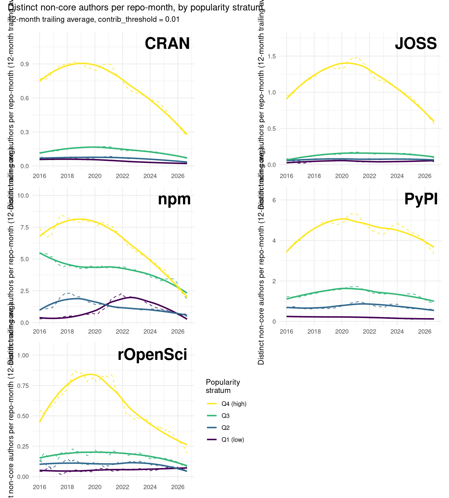
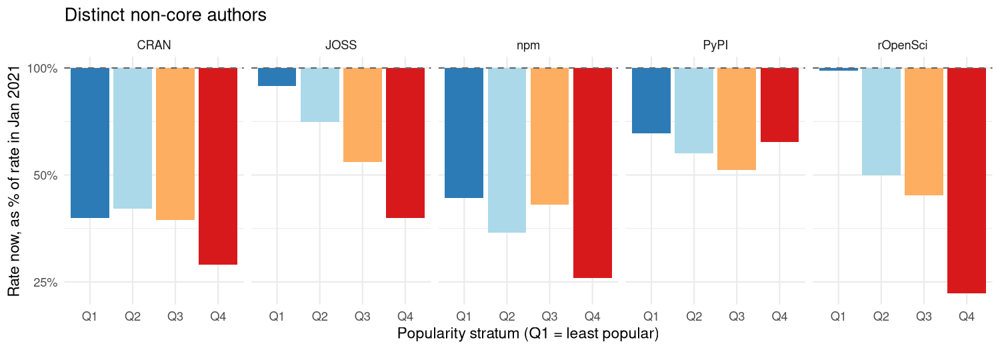
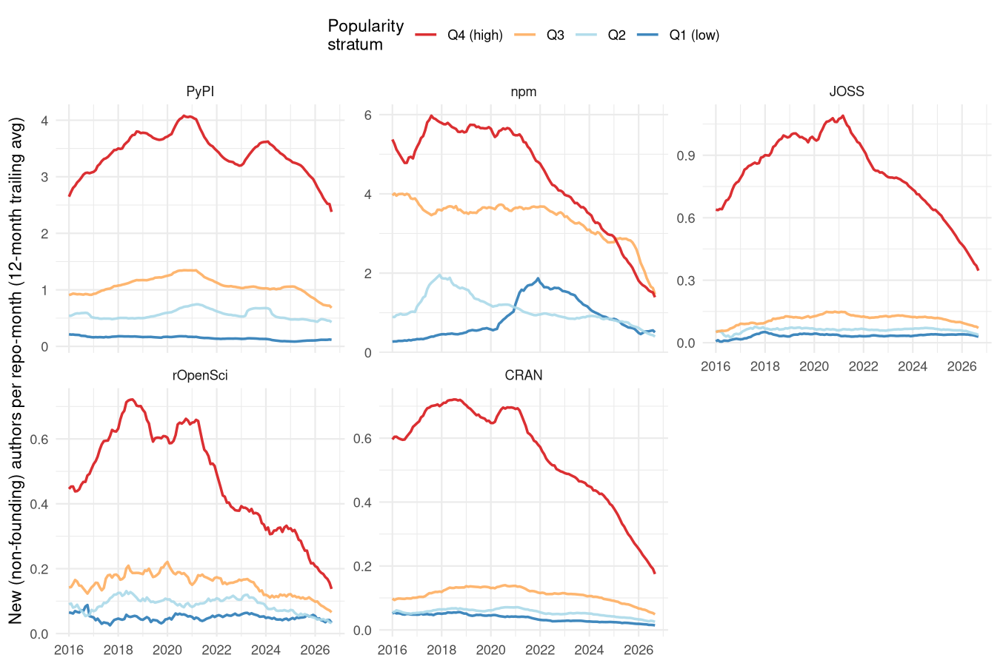
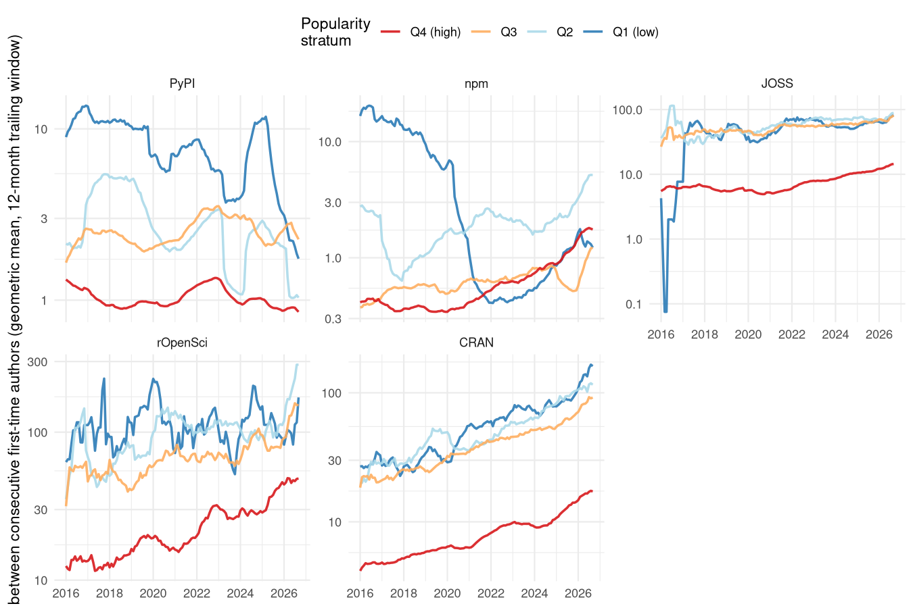
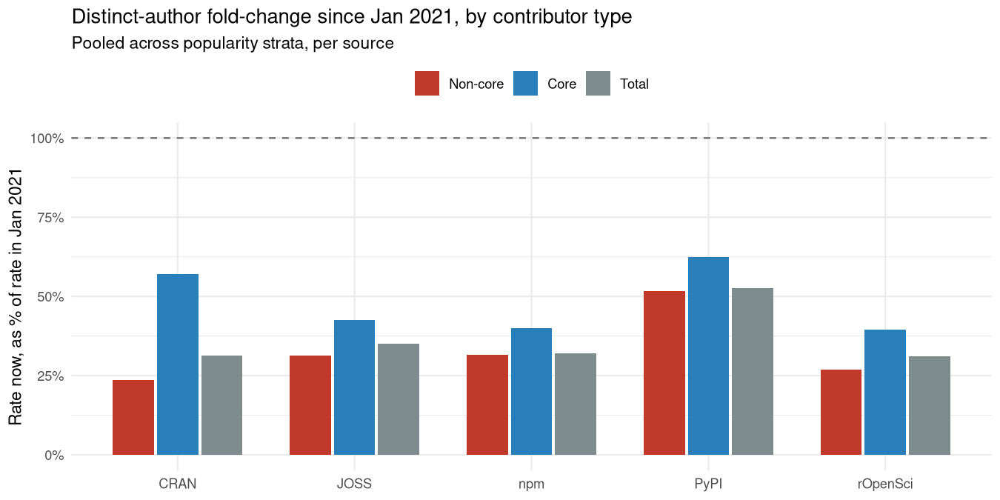
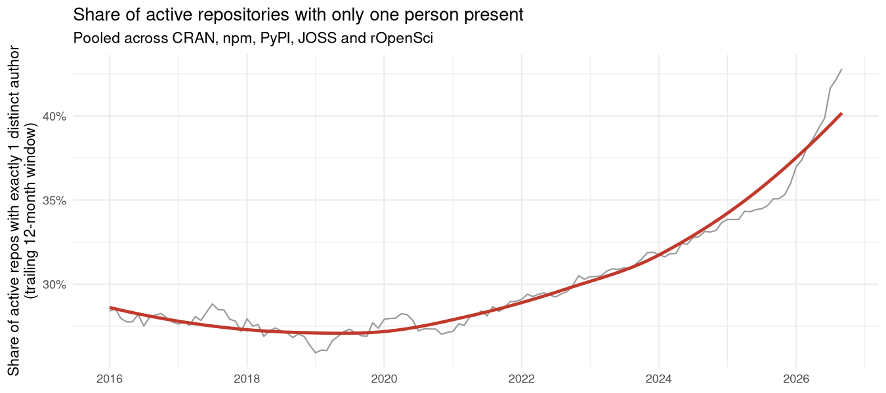

Coding Alone
Robert Putnam found Americans bowling as much as ever but increasingly outside the leagues that once turned it into a shared civic habit; across five open-source ecosystems, the same shift shows up in who writes code - not less of it, but more of it happening to just one person where several used to overlap
Mark Padgham
14 September 2026
Source:vignettes/coding-alone.Rmd
coding-alone.RmdThis vignette draws on the same large, locally-fetched dataset as
vignettes/review-dividend.Rmd (repo-data-out/:
every GitHub issue ever opened on ~50,000 repositories across CRAN, npm,
PyPI, JOSS and rOpenSci) that is far too large to ship with the package
itself. The vignette you’re reading is precompiled from that data - see
vignettes/coding-alone.Rmd.orig in the package source if
you want to re-run the analysis yourself once the underlying data is
available (via Git LFS) from the package repository.
Bowling alone, coding alone
In 1995, Robert Putnam noticed something odd in the numbers behind American leisure: more Americans were bowling than ever before, but league bowling - organised, recurring, collective - was collapsing, down by more than a third in a decade even as solo and casual bowling held steady or grew. He used it as the title image for a much broader argument: that many of the associational habits which used to knit Americans into overlapping local groups - clubs, unions, congregations, PTAs, bowling leagues - had been quietly hollowing out for a generation, not because people had lost interest in the underlying activity, but because they’d stopped doing it together (Putnam 1995, 2000). The bowling itself wasn’t the point. The leagues were the point: the incidental, repeated contact with the same loose set of other people that turned a solitary pastime into a standing piece of a community’s own infrastructure.
Open-source software has its own version of a league: a public
repository, with a maintainer or two at its centre and a shifting cast
of outsiders who file a bug, ask a question, or leave a comment, and in
doing so become a little bit known to the project and to each other.
People still write code, probably more of it than ever. What this
document asks is a Putnam-shaped question about the collective structure
built around that writing, not the writing itself: is a typical
repository still a place where a handful of different people’s paths
cross over the course of a year, or is it, increasingly, one person
coding alone? A companion analysis in this package
(vignettes/review-dividend.Rmd) found exactly one corner of
one ecosystem bucking the general decline - rOpenSci’s least-visible
packages, but only the ones that went through formal peer review. This
document sets that single exception aside and asks the broader question
directly, across five ecosystems and a decade of data, using every cut
of “who’s actually there” this dataset can support.
What was measured
The dataset combines five sources - CRAN, npm and PyPI (general package registries) and JOSS and rOpenSci (two GitHub-based software review organisations) - matched to their GitHub repositories, with every issue ever opened on each one fetched via the GitHub API: 3,135,960 issues across 52,461 repositories, spanning 2003–2026.
Three cuts of “who’s there” are used below, all built from the same
contribution field - each issue author’s cumulative share
of all commits ever made to that repository, as of when the data was
fetched. Non-core authors are those at or below
contrib_threshold = 0.01, the outsider slice used
throughout the companion vignette; core authors are
everyone above that line; total is the two combined,
with no threshold applied at all. Popularity strata (Q1 = least popular
quartile, Q4 = most popular), where used, are computed separately within
each source, from log-scaled downloads (CRAN, npm, PyPI) or GitHub stars
(JOSS, rOpenSci).
The unit of account also comes in two forms. Most of the figures below extend the companion vignette’s distinct-author density - not how many issues a repository received in a given month, but how many different people filed them, normalised by repo-months of exposure the same way an issue rate is. The final measure introduced here is simpler and more direct: for every repository with any issue-based activity in a trailing 12-month window, does that activity involve exactly one distinct person, or more than one? The share of active repositories sitting at exactly one is the closest this dataset comes to counting solo maintainers directly - a repo-count analogue of a bowling league’s own falling membership rolls, rather than of its per-lane activity rate.
Every count in this document, core contributors included, depends on a person having filed at least one GitHub issue on the repository - that’s the only trace of a “contributor” this dataset can see. Someone who commits code but never opens an issue (a co-maintainer working entirely through pull requests, say) is invisible here, in every measure below, core and total alike. Closing that gap needs real commit-history-based contributor timelines rather than issue-filing as a proxy for who’s present, and a future update to this analysis is intended to draw on exactly that. Until then, every count here should be read as a plausible lower bound on how many people are actually present, not an exact census - though there’s no obvious reason for undercounting silent committers to manufacture a decline specifically, rather than just shifting every number in this document up by some roughly constant amount.
Finding 1: fewer outsiders, counted properly

plot of chunk trend-plots
The shape is the same one the companion vignette found in issue counts: a rise or plateau through the late 2010s, a peak somewhere in the 2017–2020 window, and an ongoing decline since. That resemblance alone doesn’t prove much - a falling issue rate is mechanically compatible with a falling author count, since fewer issues can’t come from more people without each of them opening fewer on average. What settles it is comparing the two fold-changes directly, source by source and stratum by stratum:

plot of chunk fold-change-plot-authors
Every one of the 20 (source, stratum) cells in this figure sits below its January-2021 level - 20 out of 20, with no exceptions. That includes rOpenSci’s least-popular quartile, the one cell in the companion vignette’s event-count figure that rose rather than fell: counted by issues, it reached 124% of its 2021 rate; counted by distinct authors, the same cell manages only 98% - essentially flat, not growth. Whatever rOpenSci’s peer-review process is doing for its most obscure packages, it isn’t attracting a widening circle of new people; at best, on this measure, it’s holding the existing circle from shrinking.
Beyond that one cell, the two measures mostly move together, but not identically: in 15 of the 20 cells, the distinct-author count has fallen by more than the issue count has, meaning the average non-core author isn’t opening noticeably more issues to compensate for fewer of them showing up - if anything, the opposite.
Distinct-author density, though, still blends two different populations together: people who’ve been showing up for years and just keep at it, and people interacting with a repository for the very first time. Separating the two needs identifying each author’s first-ever appearance in a repository’s issue tracker, and setting aside the very first such appearance for each repo - its founding author, typically the maintainer opening the repo’s own first issue - as not itself community growth. What’s left is the closest thing this dataset offers to new members joining a bowling league, tracked the same way as every rate above: normalised by repo-months of exposure and reported as a 12-month trailing average.

plot of chunk new-author-rate-plot
The new-arrival rate has fallen in 20 of 20 (source, stratum) cells since January 2021 - the same near-universal decline Finding 1 found in overall density. In 17 of those 20 cells, the new-arrival rate has fallen by more than overall density has, meaning the decline documented above isn’t simply existing regulars posting a little less often; it’s disproportionately a shrinking supply of people showing up for the first time at all.
A monthly rate is still an average over a whole population of repositories, though, which can make a slow-moving shift feel abstract. The same underlying events - each repository’s authors, ordered by their own first-ever appearance - support a more direct, and more visceral, reframing: not “how many new arrivals per month” but “how many days does a repository actually wait between one new arrival and the next”. Measuring the gap between each first-time author and the one before them, time-stamped at the moment the later one shows up, turns the same decline into units of elapsed time rather than frequency.

plot of chunk author-interval-plot
The wait has lengthened in 17 of 20 (source, stratum) cells since January 2021 - the same near-universal direction as the rate-based measures above, just expressed as time instead of frequency. The least-popular quartile shows this most starkly, since it’s the one with the fewest events to begin with: CRAN’s bottom quartile now waits 2.9x as long between first-time authors as it did in January 2021, the largest lengthening of any source in that quartile. A repository’s least visible corner isn’t just accumulating new outsiders more slowly - it’s going measurably longer stretches of calendar time hearing from no one new at all.
Finding 2: the core is thinning too
Everything so far is about the outer circle - the people a project’s
own regulars are least likely to notice losing. Putnam’s story was never
just about casual drop-in members drifting away, though; league
bowling’s membership rolls shrank at every level, core organisers
included. The same contribution field this dataset already
uses to draw the non-core line can just as easily draw the opposite one:
core authors (contribution > 0.01) are
the people a project would recognise by name, and total
is core and non-core combined, with no threshold at all - counting
literally everyone this dataset can see interacting with a repository
through its issues.

plot of chunk fold-change-plot-bytype
Core headcounts have fallen in every one of the five sources - 5 out of 5 - and so has total headcount, core and non-core combined - 5 out of 5. Nobody’s circle is exempt. What does differ is degree: in every one of the five sources, the core headcount has fallen by less than the non-core headcount did over the same period (5 out of 5) - consistent with attrition working its way inward from a project’s edges rather than hitting the whole population evenly at once, but not with the core being insulated from it altogether. A repository’s inner circle is shrinking more slowly than its outer one, not staying put while the outer one empties around it.
Finding 3: more repositories now hold exactly one person
Findings 1 and 2 are both rate-based: fewer distinct people per repo-month, averaged across a whole population of repositories. The plainer, Putnam-shaped question is a repo-count one: out of the repositories that heard from anyone at all in the last year, how many heard from only one person?

plot of chunk solo-share-plot
In January 2021, 27% of repositories with any issue-based activity at all in the preceding year had that activity coming from a single person. By September 2026, that share had risen to 43% - not a fixed population getting quieter across the board, but a growing fraction of it crossing all the way over into having no visible second person at all. The share was roughly flat, drifting between about a quarter and a third, from 2016 through 2021; essentially the entire rise has happened since. Broken out by source, every one of the five moves the same direction - 5 out of 5 rose:
| Source | Jan 2021 | Latest |
|---|---|---|
| CRAN | 36% | 56% |
| JOSS | 25% | 35% |
| npm | 19% | 29% |
| PyPI | 18% | 31% |
| rOpenSci | 22% | 48% |
rOpenSci shows the largest relative jump of the five - not the smallest, despite housing this dataset’s one instance of formal review sustaining outside engagement in its most obscure packages. Whatever peer review is doing for a thin slice of rOpenSci’s Q1, it hasn’t stopped a majority of rOpenSci repositories overall from crossing into solo territory by the most recent data.
Finding 4: not simply projects settling down with age
The same alternative explanation the companion vignette rules out for issue counts applies here too: repositories might generate less non-core interest simply because they’re older - documentation accumulates, FAQs get answered once and closed, rough edges get sanded down - independent of any shared moment in calendar time. Disentangling the two needs the same age/period/cohort trick: fix a repository’s age and let cohort (the calendar year that age fell in) vary, so pure maturation predicts flat lines at a given age regardless of which year that age happened to fall in, while a shared calendar-time effect predicts later cohorts showing a lower rate at that same fixed age than earlier ones did.

plot of chunk cohort-age-plot
CRAN, JOSS and npm show the calendar-time signature clearly: at a fixed early age, the non-core rate falls steadily as the cohort year increases, roughly halving or more between repositories born in the mid-2010s and those born in the early 2020s - not what pure maturation predicts. PyPI and rOpenSci don’t show a comparable cohort-driven decline at fixed age, which is worth flagging rather than smoothing over: whatever combination of forces is driving the broader pattern doesn’t touch every source through quite the same channel, even though the outcome - fewer people showing up now than five years ago - turns out to be shared by all five.
Finding 5: popularity offers no protection - if anything the opposite
If the decline were simply outsiders losing interest in open source generally, it should land on popular and obscure software alike. It doesn’t:
| Source | Least popular (Q1) | Most popular (Q4) | Gap (Q4 − Q1) |
|---|---|---|---|
| rOpenSci | 98% | 23% | -75% |
| JOSS | 89% | 38% | -51% |
| npm | 43% | 26% | -17% |
| CRAN | 38% | 28% | -10% |
| PyPI | 66% | 62% | -4% |
In every one of the five sources, the most popular quartile’s headcount has fallen further below its 2021 baseline than the least popular quartile’s has - the same direction the companion vignette reports for issue counts, but here without a single source running the other way. Popularity buys a project more absolute traffic, but it hasn’t bought insulation from this trend; the software with the most outside visibility to lose is losing proportionally more of it than the software that barely had any to begin with.
What this looks like from outside this dataset
Nothing in this dataset says why. But the pattern - a shrinking, and increasingly solitary, pool of participants, hitting visible and obscure projects alike, reaching core contributors as well as outsiders, unexplained by projects simply aging - lines up with what’s independently being reported about the people who keep open source running day to day, in terms that echo Putnam’s own more directly than might be expected. A 2024 survey of open-source maintainers found that 61% of them maintain their project entirely alone, and that unpaid maintainers were disproportionately likely to be the ones flying solo (Socket 2024). Tidelift’s own 2024 survey of maintainers found that 60% remain entirely unpaid and nearly 60% have quit, or seriously considered quitting, a project they maintain, citing competing life demands, loss of interest, and burnout among the leading reasons (Tidelift 2024). In November 2025, Kubernetes’ steering and security committees retired Ingress NGINX - one of the most widely deployed pieces of cloud-native infrastructure in existence, maintained for years by one or two people working nights and weekends - after concluding that no amount of public appeal could attract the additional help needed to keep it going (Kubernetes SIG Network and Security Response Committee 2025). A project that visible sitting in this dataset’s own Q4 is exactly the kind of case Finding 5 describes: popularity that didn’t translate into a growing base of people ready to share the load.
The newcomer side of the pipeline shows a matching strain from the supply end. Newcomers have always been hard to retain - a decade-old study of one large Apache project found fewer than one in five who showed up ever became long-term contributors, largely depending on whether their first interaction got a timely, helpful response (Steinmacher et al. 2013). More recent evidence suggests the on-ramp meant to fix exactly that problem is itself fraying: a 2026 longitudinal study of “good first issue” labelling across 37 popular OSS projects found that after holding steady for three years, the share of issues labelled as newcomer-friendly began a statistically significant decline starting in January 2024 (Hoshikawa et al. 2026) - maintainers with less time or attention to spare evidently have less of it left over for curating an on-ramp, on top of everything else. None of this is a new problem invented by any one technology; a decade before any of it, Nadia Eghbal’s Roads and Bridges was already describing critical open-source infrastructure sustained by a handful of unpaid volunteers, and arguing that the fix isn’t simply money, because what these projects actually run short of is people (Eghbal 2016).
The decline’s timing loosely coincides with two other, independently documented shifts: GitHub Copilot’s move from limited preview to general availability in mid-2022 (Wikipedia contributors 2026), and a well-documented collapse in Stack Overflow’s own new-question volume beginning around the same time (Orosz 2025; Holscher 2025) - the other major venue for the same kind of peer-to-peer technical exchange this dataset measures. One speculative mechanism worth naming, though this dataset can’t test it directly: if AI coding assistants increasingly converge developers onto similar solutions and similar code, that kind of algorithmic monoculture could itself thin out the organic variety of problems that used to generate an issue or a question in the first place (Bommasani et al. 2022). That’s one candidate explanation among several plausible ones, offered as context rather than as something this dataset can adjudicate - and it would sit alongside, not replace, Putnam’s own preferred explanations for the associational decline he documented: generational turnover, two-career households leaving less unscheduled time, and, well before social media, the privatising pull of television (Putnam 2000).
Caveats
- Every count in this document depends on issue-filing, not commit history, as explained above - core, non-core and total headcounts alike miss anyone who contributes code without ever opening an issue. A planned update to this analysis will substitute real commit-based contributor timelines for this proxy; the numbers here should be read as a plausible lower bound, not an exact census, though there’s no obvious mechanism by which fixing this would turn any of the declines reported above into a rise.
- Distinct-author density counts author-months, not lifetime-unique people. Someone active in three different months within a trailing 12-month window is counted three times, once per month - the same construction as the underlying issue-rate metric, chosen so the two stay directly comparable. This measure can’t distinguish a shrinking pool of regulars from a shrinking stream of one-time drive-by contributors; both would produce the same falling density.
- The per-repo decline is steeper than the decline in total participation, because the population of repositories itself grew over the same period: 21,548 primary-source repositories exist in this dataset now, against 13,043 that already existed by January 2021 - a 1.7x increase. Raw, unnormalised monthly non-core author counts across all five sources combined have fallen only to about 75% of their January-2021 level, well short of the roughly 43% median seen per repository. More repositories now compete for a shrinking amount of attention per repository - the total pool of people engaging with open source hasn’t collapsed nearly as sharply as any individual project’s own share of it has.
- The solo-repository share (Finding 3) is a repo-count share, not normalised by exposure at all, unlike every other measure in this document - it doesn’t correct for the same repo-count growth just described. It answers a different question on purpose (how many repositories, not how much activity per repository), but that also means it isn’t directly comparable in magnitude to the fold-changes reported elsewhere.
-
contributionis a lifetime measure, not a point-in-time one, so an issue filed by someone who later became a core maintainer is excluded from “non-core” counts even for that earlier issue. - Popularity strata reflect current downloads/stars, not historical popularity - stratification here doesn’t track a repository’s popularity trajectory, only its current standing.
- No direct measure of why any individual stopped participating. Nothing here distinguishes burnout, disinterest, AI substitution, or simply moving on to other things - the external context above is context, not measurement.
Where this leaves things
Putnam’s title image worked because bowling itself wasn’t disappearing - what was disappearing was the league around it, the thing that turned an individual pastime into a piece of shared civic life. This dataset can’t speak to whether people are writing less code; if anything, the tools available for writing it alone have only multiplied. What it can speak to is the collective structure built around that writing, and on every cut available - non-core outsiders, core contributors, everyone combined, and the blunter question of how many repositories now involve only one person at all - that structure has been thinning since around 2021, across five different ecosystems, unexplained by projects simply maturing, and unprotected by popularity. The one place this dataset finds a countervailing force - rOpenSci’s formal peer review, sustaining non-core engagement in its own least-visible packages - doesn’t rescue that same corner of rOpenSci from a rising solo-repository share either. None of that is proof of any single cause. What it is, is a structural, five-ecosystem-wide shift from code written and shared among a loose, overlapping circle of people toward code written and shared by one person at a time - open source’s own version of bowling alone, showing up in this dataset at almost exactly the same moment outside observers, from maintainer surveys to a retired Kubernetes component, have been reporting it from the other side.